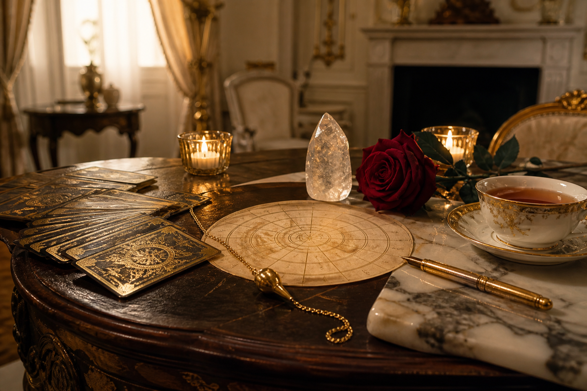

Флагман
Таро
Глубокий расклад по ситуации: отношения, решение, скрытые мотивы, ближайший цикл. Не общие слова — конкретная карта местности.
от 7 000 ₽ · 60–90 мин
Частные консультации
Таро · Нумерология · Картолог
Ясность без театра. Я читаю структуру ситуации — где вы стоите сейчас, что уже созрело и какой шаг действительно ваш.

Мастер раскладов и тонких смыслов
«Карты и числа не решают за вас. Они показывают то, что уже живёт в поле — чтобы вы могли выбрать осознанно.»— Алина
Знакомство
Я работаю на стыке классических систем: Таро, нумерологии и картологии. Это не шоу и не «судьба в вакууме». Это спокойная, точная работа с запросом — отношениями, выбором, предназначением, внутренним циклом.
Ко мне приходят, когда нужна честная картина: что происходит на самом деле, где вы теряете энергию и какой путь уже открыт. Я говорю прямо, бережно и без лишней мистики.
Практики
Четыре языка одной ясности — выбирайте тот, который ближе к вашему запросу.
Флагман
Глубокий расклад по ситуации: отношения, решение, скрытые мотивы, ближайший цикл. Не общие слова — конкретная карта местности.
от 7 000 ₽ · 60–90 мин
Портрет по дате рождения: ресурсы, уроки, матрица года и то, как лучше принимать решения в этом цикле.
от 5 500 ₽
Код имени, фамилии и даты. Как вас «читают» мир, партнёры и собственная психика — и что с этим делать.
от 6 000 ₽
Совместимость, динамика пары, треугольники, «почему снова одно и то же». Честный разбор без морали.
от 8 000 ₽

Карта года: ключевые месяцы, темы роста, отношения, деньги и внутренний ритм. Собирается из Таро и нумерологии.
от 12 000 ₽ · 90 мин
Атмосфера
Сессии проходят в спокойном формате: без спешки, с вниманием к деталям запроса. Онлайн — в Zoom или Telegram. Очно — в камерной студии по договорённости.
Путь
Оставляете имя, удобный способ связи и тему. Я отвечаю лично, обычно в течение дня.
Коротко уточняем, что для вас сейчас важно. От этого зависит формат и глубина сессии.
60–90 минут живого разбора. Вы можете записывать встречу и задавать вопросы по ходу.
После встречи — ключевые выводы и рекомендации. При необходимости можно взять поддержку.
Голоса
«Пришла с хаосом в отношениях. Алина разложила всё так, будто сняла туман. Ушла не с надеждой «вдруг», а с пониманием, что делать завтра.»
«Нумерологический портрет оказался точнее любого теста. Особенно про циклы года — я наконец перестала торопить то, чему ещё рано.»
«Никакой эзотерической воды. Спокойный тон, точные формулировки, уважение к выбору. Редкая комбинация глубины и здравого смысла.»
Запись
Опишите запрос своими словами. Я подскажу формат и ближайшее время. Если удобнее — укажите Telegram или WhatsApp.